TVBox Car 3K · Runtime Review
当前 App 界面与验收画廊
当前源码的 r8 运行截图，按 2880×1620 / 160 dpi 车机基线采集。
APK SHA-256
1C0AD382B2A1C9244BEE1ACE49849A2FC734D94E9CDA1D9412C4E16316C652D5
1C0AD382B2A1C9244BEE1ACE49849A2FC734D94E9CDA1D9412C4E16316C652D5
页面矩阵
15 / 15
XML 可解析，PNG 2880×1620
目标崩溃
0
所有矩阵 crash 摘要为空
交互热区
3 / 15
均为设置页可滚动尾部碎片
显示门禁
PASS
2880×1620，物理 160 dpi
先看结论
当前可直接检查的重点：Home、Search、7 个设置分类、历史、收藏、推送、本地文件、直播和详情空态。页面截图全部来自同一个 r8 SHA。搜索 Back、系统输入法、热词、历史清空、页面 Back、画面预设和直播全屏提示的主热区已提升到 90px 以上。
仍需区分：设置页底部 `llDns`、`uxNavHistoryRow`、`switchAdvancedHaptic` 是可滚动页面的尾部可视碎片，不是主入口尺寸；clun/xiaosa 的远端内容结果不能只用静态截图替代。
当前运行截图

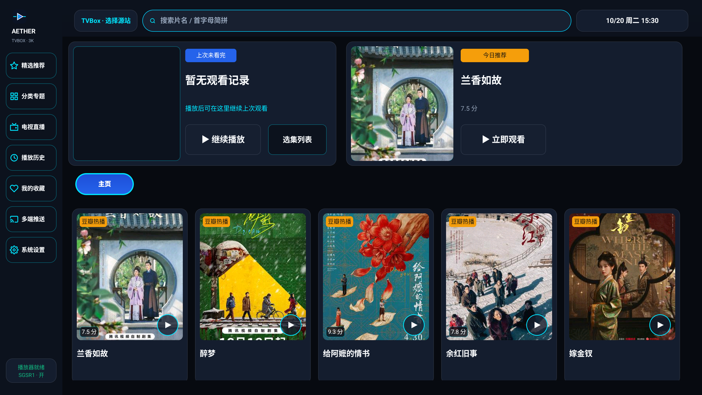

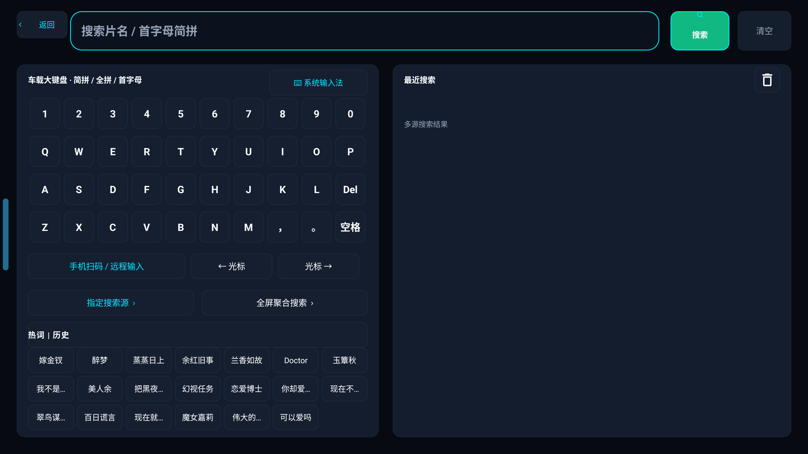

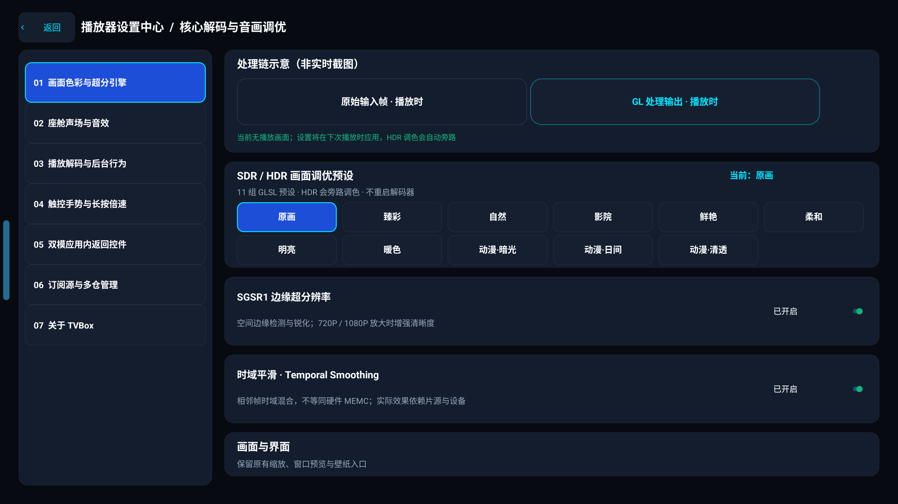

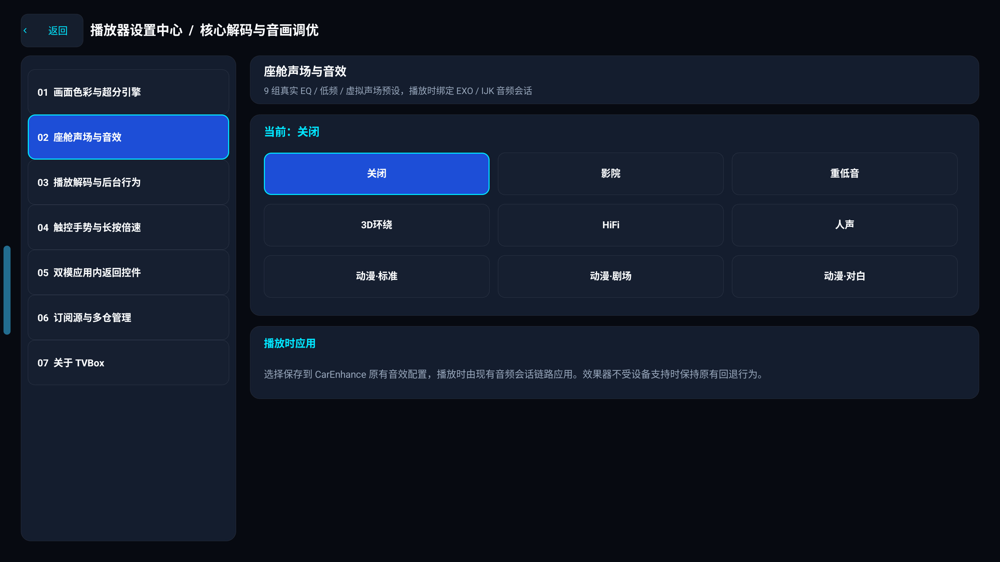

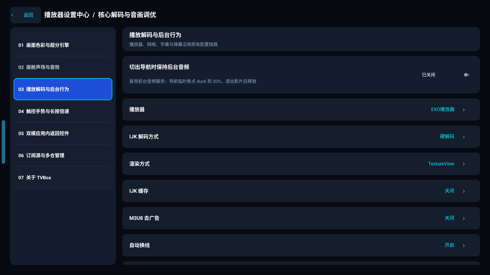

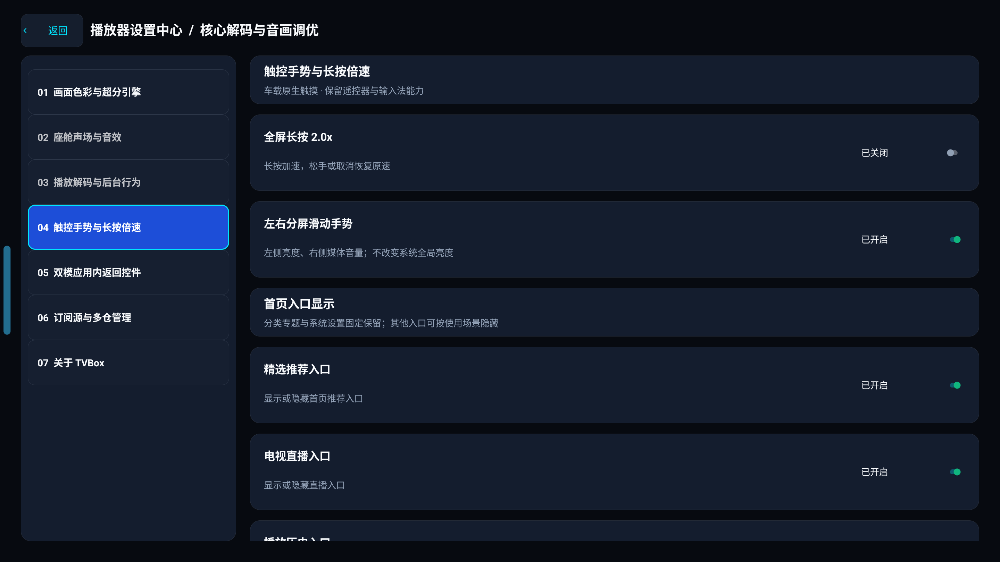

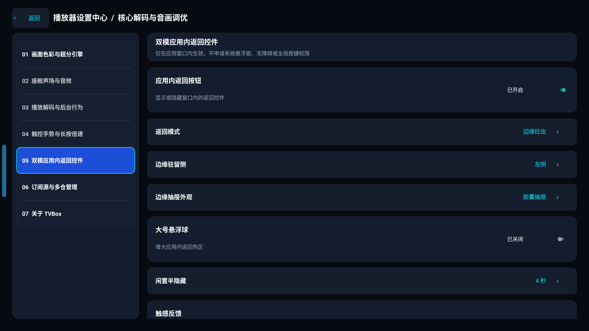

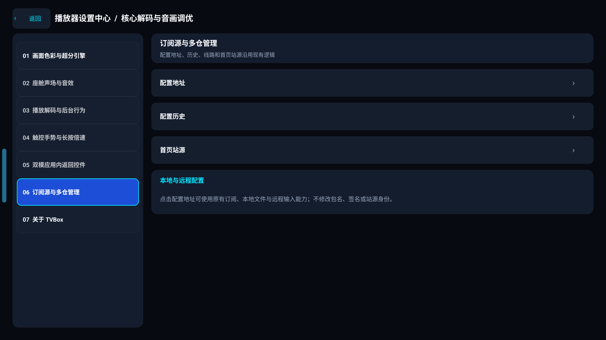

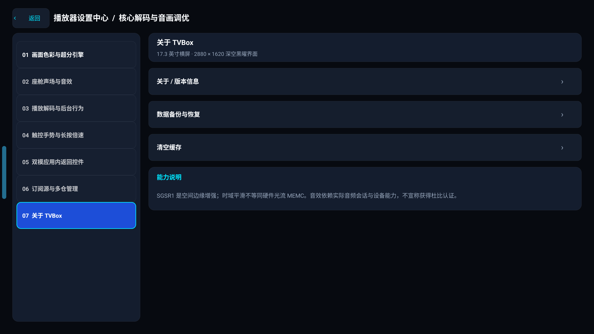

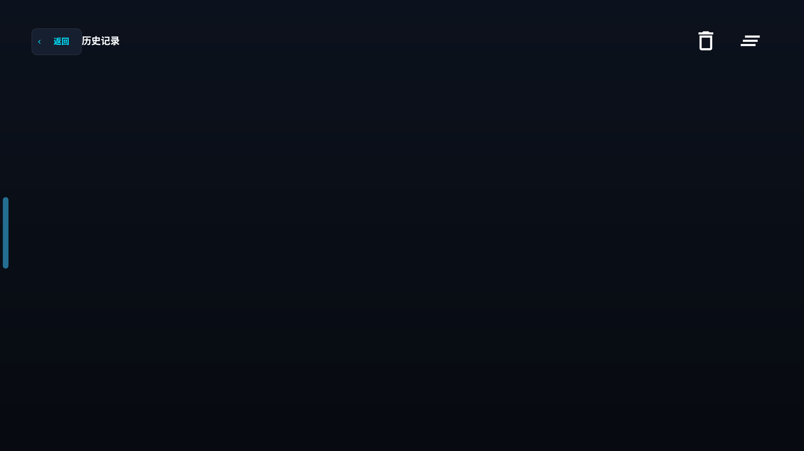

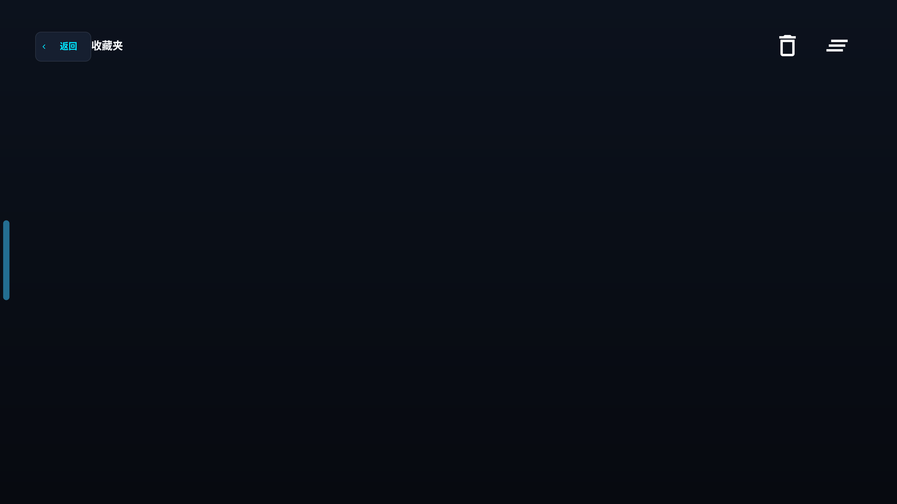

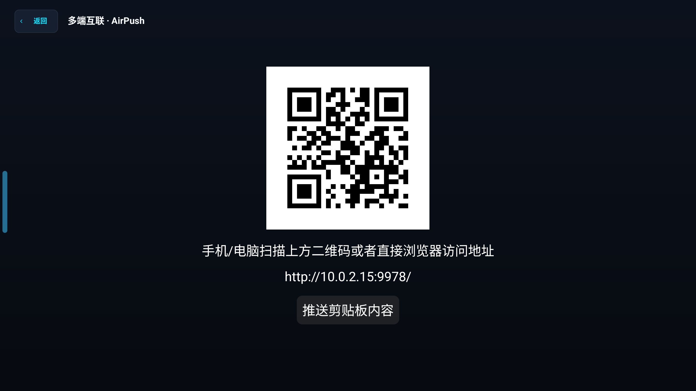

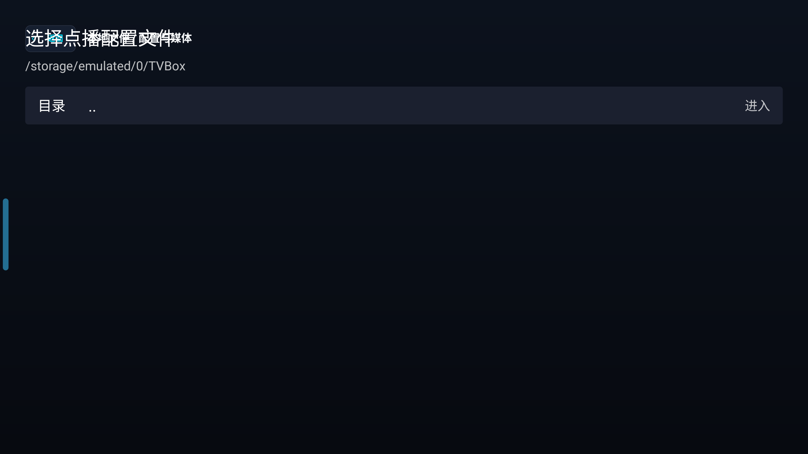

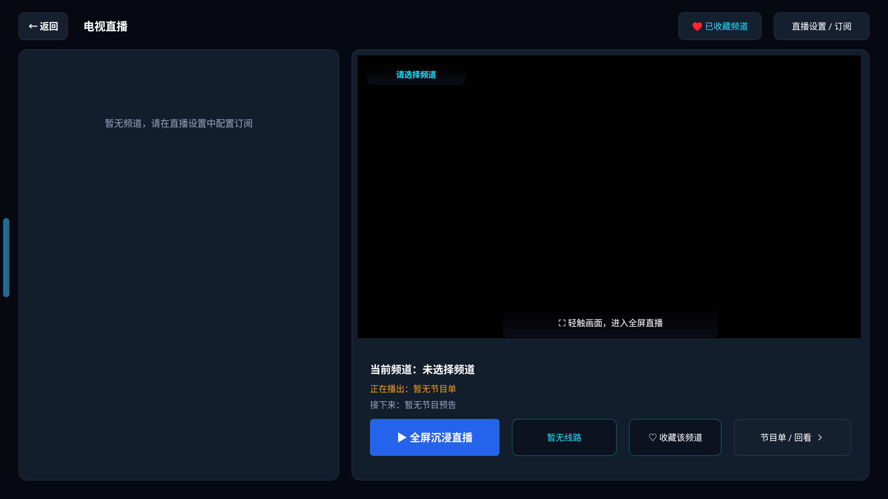
源与内容状态
| 路径 | 当前 r8 证据 | 解释 |
|---|---|---|
| Home | 已渲染 | 当前页面可以看到推荐卡和车机导航。 |
| Search | 已渲染 | 七列热词布局避免底部裁切；搜索结果区仍需远端数据才能形成正向结果。 |
| xiaosa | 源状态已配置，正向内容证据使用上一版同布局 runtime | 布局 r8 只改变热区和搜索列数；HTML 的当前页面矩阵绑定 r8 SHA。 |
| clun | runtime 404 曾复现 | host probe 200 与 App runtime 结果不一致，保留为远端边界。 |
| Python HTTP | 环境阻塞 | 测试收集前缺少 `requests`。 |
当前问题定位
- 设置页初始视口底部仍有 3 个可滚动内容尾部碎片。
- Live/Detail 空态不等于内容功能失败。
- 远端源需要单独按 runtime 结果判断。
设计参考：播放器
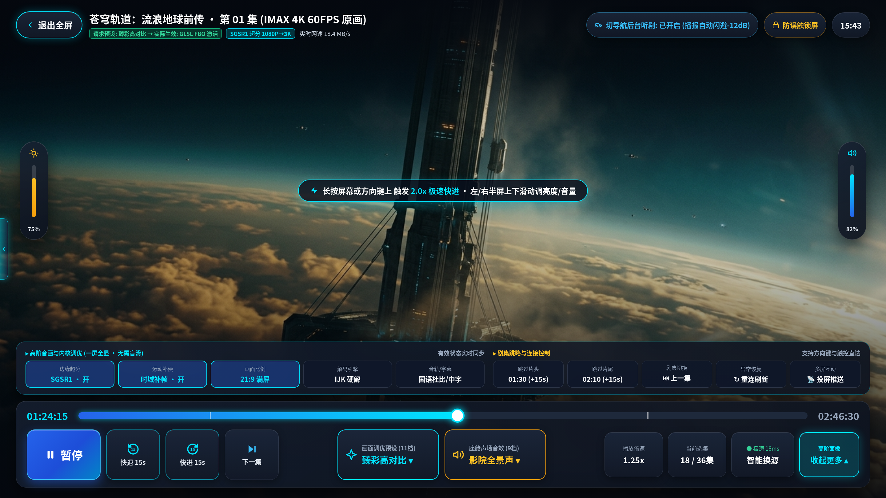
这是设计包参考图，不是 r8 runtime 证明。